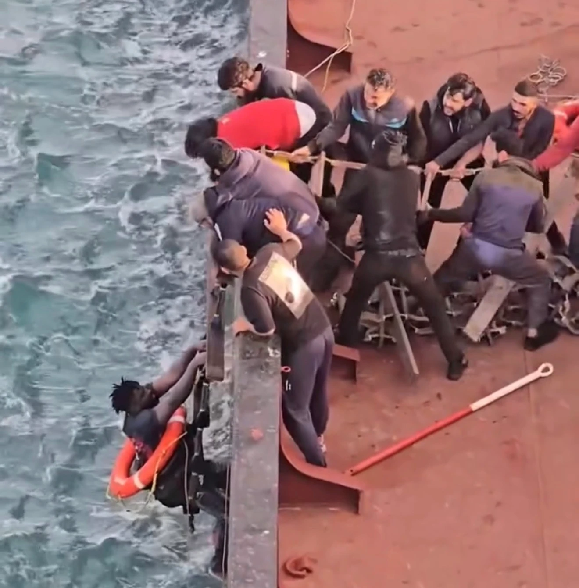

In late January 2026, the Mediterranean cyclone crossed the Strait of Sicily as an unspecified number of people attempted to cross the sea from Tunisia. More than a thousand were reported dead or missing.
Opening video: Refugees in Libya, Instagram reel (2026)
At the end of January 2026, Cyclone Harry crossed Southern Italy and the North African coast. In the Sicilian town of Niscemi, a landslide destroyed buildings and forced more than 1,600 people to evacuate, but killed no one. A few miles away, at sea, the same days unfolded differently: more than a thousand people were reported dead or missing in the Central Mediterranean, right after the passage of the storm. Over the following weeks, a handful of anonymous bodies washed ashore on the beaches of Sicily and Calabria.
The only known survivor from one of these boats was Ramadan Konte, from Sierra Leone. According to his testimony, reported by Mediterranea, he left Sfax on a boat carrying around 50 people. During the storm, the boat capsized. Konte survived for more than 24 hours in the open sea before being rescued by the merchant ship Star, captained by Ahmed Omar Shafik, off the east coast of Tunisia and south of Malta. When he was pulled aboard, bodies were visible in the water around him. From that single boat, he lost his brother, his brother's wife, and his nephew.

The Central Mediterranean route is known as the deadliest migratory sea route worldwide. Since 2014, IOM's Missing Migrants Project has documented tens of thousands of deaths and disappearances, with the majority occurring on this route. In 2025 alone, over 1,300 people lost their lives there. Cyclone Harry caused a similar loss, with waves reaching seven metres and winds over 54 knots in about a week. The primary causes of death are structural: overloaded rubber dinghies, unseaworthy boats, lack of rescue vessels, and most critically, the absence of legal migration options.
This matters because rescue capacity influences the possibility of survival. When Italy scaled back its Mare Nostrum operation, substituting it with the smaller EU-led Triton mission, mortality rates on the route increased dramatically (Heller & Pezzani, 2016) — a risk EU policymakers had been warned about in advance. The legal scholar Violeta Moreno-Lax calls this "interdiction by omission": when destination states delegate (or "externalize") their duty to rescue to third countries or private actors that cannot — or will not — fulfil it, non-rescue itself becomes a deliberate tool of border control (Moreno-Lax, 2020; 2018).
The standard counter-argument — that rescue ships act as a "pull factor" — does not hold up under quantitative scrutiny. A regression analysis of Libya-to-Italy crossings found that the only statistically significant predictors of departures were weather conditions and political stability on the Libyan side; NGO presence had no significant effect (Cusumano & Villa, 2020). A more recent causal study employing machine learning (Rodríguez Sánchez et al., 2023) reached the same conclusion for the Central Mediterranean route over 2011–2020: state and private rescue operations did not increase migration flows. What drives variation in crossings was conflicts in countries of origin and transit, alongside commodity prices, currency exchange rates, natural disasters, and weather conditions. Rescue, the paper concludes, is a response to the flow of migration — not its cause. When NGO ships are obstructed, delayed, or criminalized, it is not departures that change but survival rates.
This is what externalization looks like in practice. On these very same days of the tragedy, the 21st of January 2026, the EU delivered over 21 million euros' worth of new land and sea border-control equipment to Tunisian authorities. The transfer was the most recent step in a policy framework formalized by the 2016 agreement with Turkey, the 2017 MoU with Libya, the 2023 MoU with Tunisia, and cooperation agreements with Morocco and Algeria.
Each circle marks a recorded event. Circle size scales with the number of dead or missing per incident. Meteosat SEVIRI 10.8 µm cloud-top brightness temperature. White/magenta = coldest tops, deepest convection; grey = low cloud or sea surface.
In the days before the shipwrecks, testimonies from Sfax describe raids, military pressure, and the destruction of informal settlements in the olive groves around the city. According to these accounts, controls on the beaches were relaxed at the same time, allowing many boats to leave despite the bad weather.
The situation in Tunisia helps explain why so many people may have left under such dangerous conditions. People do not always choose when to cross, they cross because staying has become impossible. Human Rights Watch documented abuses by Tunisian security forces against Black African migrants, refugees, and asylum seekers, including beatings, arbitrary arrests, forced evictions, and collective expulsions. Amnesty International warned that EU cooperation with Tunisia risks complicity if it prioritizes containment over protection.
The animation shows the full 37-day window, from 12 January to 17 February 2026. Black circles accumulate as incidents are recorded.
Scroll on to advance the animation. Toggle between meteorological and satellite views above.
On 21 January, Cyclone Harry intensified over the Strait of Sicily. Sustained winds exceeded 80 km/h and wave heights rose sharply across the crossing zone. Multiple boats in the water at the time capsized or were swamped.
According to Mediterranea Saving Humans, an official maritime alert was transmitted through the Inmarsat network by the Italian Coast Guard's Maritime Rescue Coordination Center in Rome. The alert, dated 24 January 2026, referred to eight separate SAR cases: eight boats that had left Sfax between 14 and 21 January, carrying about 380 people in total. As of that date, none of those boats had been found, and no confirmed rescues linked to those eight cases had been reported. However, testimonies collected in Tunisia by Refugees in Libya from families of people who had disappeared after leaving the Sfax area describe the number of missing persons during that day as closer to 1000.
The satellite view above shows the cyclone from space: the coldest cloud tops (white and magenta) mark the deepest convection at the storm's centre. Toggle to the wind & pressure view to see the same period through ERA5 meteorological data.
In the weeks after the storm, 14 bodies were recovered along the coasts of Sicily and Calabria. In Calabria, the dead reached the beaches of Scalea, Amantea, and Tropea. In Sicily, five were found in the sea around Pantelleria, with others at San Vito Lo Capo, Marsala — one body still wearing a life jacket — Trapani, Petrosino and Custonaci.
The visualization zooms into the Calabrian coast as circles accumulate on shore. Each body recovered represented a family waiting for news. Activists and forensic teams worked to identify the deceased, many of whom had no documentation. Most will remain unnamed.
By mid-February, UNITED for Intercultural Action had recorded 20 incidents directly linked to Cyclone Harry, accounting for 1,109 deaths. The IOM's Missing Migrants Project registered 25 events in the same window, totalling 499 dead or missing.
The real toll is almost certainly higher. Many boats never make it to a shore that could report them missing. Many bodies are never recovered.
The following interactive map shows the incidents that have been identified as linked to the passage of Cyclone Harry. Hovering over the black bubble, it is possible to read information about each specific incident, and toggling from IOM to UNITED allows to visualize how the two organization classify and count incident differently.
Sources differ in scope. UNITED's List of Refugee Deaths records incidents explicitly linked to Cyclone Harry; IOM's Missing Migrants Project covers all Central Mediterranean events in the same window, including post-storm body recoveries along Italian and Libyan coasts. IMO Search and Rescue zones (Italy, Malta, Tunisia, Libya) are shown as dashed grey context. Hover a circle for incident details.
The figures differ because the organizations that gather them operate differently, and both datasets are authoritative, though they show slightly different data. IOM's Missing Migrants Project, launched in 2014, builds each incident from a hierarchy of evidence — coast-guard and forensic records where available, then media reports, then NGO and survivor testimony — and publishes a documented minimum for each event it can verify through more than one source, which is quite restrictive. UNITED for Intercultural Action has been doing something different, and for longer: since 1993 its List of Refugee Deaths has recorded individual deaths attributable to European border policy, drawing on a wider evidentiary base (member organizations, families, media) and a broader definition that includes deaths at land borders, in detention, and after arrival. In between sit the actors who witness events at sea: NGO rescue ships such as Mediterranea, SOS Méditerranée and Sea-Watch, the Alarm Phone distress hotline, and activist networks like Refugees in Libya, whose incident logs and survivor testimonies feed into both datasets. For events like the January 2026 crossings, where most boats left no survivors, these civil-society sources are often the only ones that exist. The core problem is what researchers call "invisible shipwrecks": boats that leave shore, disappear with no survivors, and leave no trace. That's why all the estimates are minimum estimates, while the actual figures are most probably much higher.
Identifying the dead is extremely difficult. Bodies recovered after days or weeks at sea may be decomposed beyond visual recognition. There is no international DNA comparison system, and post-mortem procedures on the Italian side are inconsistent. The result is large-scale anonymity.
However, the technical capacity exists, but not at scale. Cristina Cattaneo and the LABANOF forensic laboratory at the University of Milan have served as medico-legal coordinators for Italy's Commissioner for Missing Persons. Their pilot studies — including the October 2013 Lampedusa shipwreck, in which 39 of 366 recovered bodies were positively identified — show that decomposed remains can be matched to ante-mortem data from relatives when both ends of the chain are properly resourced. What is missing, Cattaneo and her co-authors argue, is a legal framework that makes post-mortem data collection mandatory rather than discretionary, an Italian database that pools anthropological, genetic, and medico-legal records across jurisdictions, and an international data-sharing infrastructure modeled on Interpol procedures.
On 24 February 2026, four organizations — Mem.Med (Memoria Mediterranea), ASGI, Mediterranea Saving Humans and Alarm Phone — appealed to Italian authorities to apply exactly that framework to the Cyclone Harry recoveries: to collect DNA and fingerprints from the remains, complete the standard post-mortem identification forms, register each body in the Registro Nazionale dei Cadaveri Non Identificati, and establish a procedure that would let families abroad submit comparative DNA. The problem, as the attorney for Mem.Med Serena Romano explained, is that there is "zero political will" to identify the dead, and accused authorities of acting to "make deaths invisible." The Italian government has not responded. The same demand was repeated in July 2025 by ASGI, EMERGENCY, Sea-Watch and Mem.Med about two migrants recovered in Libyan SAR waters, where they noted that immediate burial often prevents identification. Without these procedures, people disappear twice: first in the sea, and then again in the administrative silence that follows.
This piece is built from five datasets: two meteorological / satellite raster products, two incident lists of recorded migrant deaths, and one set of administrative-zone polygons. Every dataset used in the article is listed below.
cdsapi client (free CDS account required).eumdac client (HRSEVIRI usage license required).The first animation shows how Cyclone Harry developed and moved across the Central Mediterranean between 12 January and 17 February 2026. The colour shading represents wind speed — from calm (white) through moderate (green/yellow) to intense (orange/red) — while the contour lines trace atmospheric pressure and their concentric pattern marks the cyclone's centre. Both variables come from ERA5, a global atmospheric reanalysis produced by the Copernicus Climate Change Service. ERA5 is not a satellite measurement: it is a computational reconstruction of the state of the atmosphere, combining observational data from many sources with a numerical weather model to produce a consistent gridded dataset going back to 1940. The animation samples one frame every three hours.
The second animation shows the same period from a different angle: what the Meteosat satellite saw looking down at the storm. The data come from the MSG SEVIRI instrument on board Meteosat, operated by EUMETSAT, which measures the temperature of cloud tops in the infrared. Cold cloud tops (shown in white and magenta) indicate tall, active convection — the engine of the storm. Warm values (grey) indicate low cloud or the sea surface. Unlike ERA5, this is a direct satellite observation, not a model output. The satellite takes a full-disk image of Earth every 15 minutes; the animation uses one frame every three hours, matching the ERA5 cadence. Both animations zoom progressively into the coast of Calabria from 1 February onwards, where bodies washed ashore in the weeks following the storm.
UNITED for Intercultural Action has maintained its List of Refugee Deaths since 1993, documenting individual cases of people who have died at or because of the borders of Europe. The list is compiled from reports by a network of roughly 550 organisations across 48 countries, supplemented by journalists, researchers, and local experts. Each entry is individually verified and includes the date, location, number of deaths, and a brief description of the cause. For this article, the dataset was filtered to the 20 entries whose cause-of-death description explicitly names Cyclone Harry, yielding 1,109 recorded deaths. This filter is deliberate but limiting: it counts only events where the connection to the storm was explicitly documented at the time, and will miss cases where the link was never established or recorded.
The IOM Missing Migrants Project, run by the International Organization for Migration, tracks deaths and disappearances of migrants globally. It draws on a wider set of sources than UNITED — coast guard reports, IOM field offices, media, NGOs — and aims to record every incident in a given migration corridor within a given time window, regardless of whether a specific cause (such as a storm) has been attributed. For this article, the dataset (May 2026 snapshot) was filtered to the Central Mediterranean route between 14 January and 17 February 2026, producing 25 events totalling 499 dead or missing. This figure includes body recoveries that occurred days or weeks after the storm, along the coasts of Italy and Libya. The two datasets are not directly comparable and should not be summed: they answer different questions and use different definitions of what counts as an event.
Each circle on the map represents one recorded event in the relevant dataset. The size of the circle scales with the number of dead or missing reported for that event, so large circles indicate incidents with many casualties and small circles indicate one or a few. The map uses a proportional symbol approach: circles are not sized to match each other exactly, but to give a visual sense of the relative scale of each event. The Search and Rescue zone boundaries shown in grey indicate which country's coast guard has nominal responsibility for rescue operations in each area; they are provided as geographic context, not as a judgment about responsibility.
All code, data, and replication instructions are at github.com/data-journalism-26/final-project-giorgio_final.